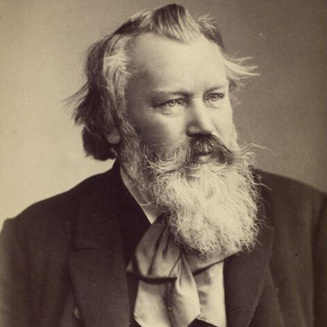

 (Hamburgo, 1833 - Viena, 1897) Compositor alemán. En una época en que la división entre partidarios y detractores de Richard Wagner llegó a su grado más alto, la figura de Brahms encarnó para muchos de sus contemporáneos el ideal de una música continuadora de la tradición clásica y de la primera generación romántica, opuesta a los excesos y las megalomanías wagnerianos.
No por ello cabe considerarlo un músico conservador: como bien demostró en las primeras décadas del siglo XX un compositor como Arnold Schönberg, la obra del maestro de Hamburgo se situaba mucho más allá de la mera continuación de unos modelos y unas formas dados, para presentarse cargada de posibilidades de futuro. Su original concepción de la variación, por ejemplo, sería asimilada provechosamente por los músicos de la Segunda Escuela de Viena.
Respetado en su tiempo como uno de los más grandes compositores y considerado a la misma altura que Bach y Beethoven, con los que forma las tres míticas «B» de la historia de la música, Brahms nació en el seno de una modesta familia en la que el padre se ganaba la vida tocando en tabernas y cervecerías. Músico precoz, el pequeño Johannes empezó pronto a acompañar a su progenitor al violín interpretando música de baile y las melodías entonces de moda.
Al mismo tiempo estudiaba teoría musical y piano, primero con Otto Cossel y más tarde con Eduard Marxsen, un gran profesor que supo ver en su joven alumno un talento excepcional, mucho antes de que éste escribiera su Opus 1. Marxsen le proporcionó una rigurosa formación técnica basada en los clásicos, inculcándole también la pasión por el trabajo disciplinado, algo que Brahms conservó toda su vida: a diferencia de algunos de sus contemporáneos que explotaron la idea del artista llevado del arrebato de la inspiración y del genio, el creador del Réquiem alemán dio siempre prioridad especial a la disciplina, el orden y la mesura.
Excelente pianista, se presentó en público el 21 de septiembre de 1848 en su ciudad natal con gran éxito, pese a que, más que la interpretación, su verdadera vocación era la composición. En el arduo camino que siguió hasta alcanzar tal meta, Marxsen constituyó un primer eslabón, pero el segundo y quizá más importante fue Robert Schumann. Tras una corta estancia en Weimar, ciudad en la que conoció a Franz Liszt, Brahms se trasladó a Düsseldorf, donde entabló contacto con Schumann, quien quedó sorprendido ante las innegables dotes del joven artista. La amistad entre ambos, así como entre el compositor y la esposa del autor de Manfred, se mantuvo durante toda su vida.
Siguiendo los pasos de Beethoven, en 1869 Brahms fijó su residencia en Viena, capital musical de Europa desde los tiempos de Mozart y Joseph Haydn. Allí se consolidó su personal estilo, que, desde unos iniciales planteamientos influidos por la lectura de los grandes de la literatura romántica alemana y cercanos a la estética de Schumann, derivó hacia un posicionamiento más clásico que buscaba sus modelos en la tradición de los clásicos vieneses y en la pureza y austeridad de Bach.
Brahms, que al principio de su carrera se había centrado casi exclusivamente en la producción pianística, abordó entonces las grandes formas instrumentales, como sinfonías, cuartetos y quintetos, obras todas ellas reveladoras de un profundo conocimiento de la construcción formal. A diferencia de la mayoría de sus contemporáneos, y al igual que su rival, Anton Bruckner, fue partidario de la música abstracta y nunca abordó ni el poema sinfónico ni la ópera o el drama musical. Donde se advierte más claramente su inspiración romántica es en sus numerosas colecciones de lieder. En el resto de su producción, de una gran austeridad y nobleza de expresión, eludió siempre cualquier confesión personal.
{kind=link}